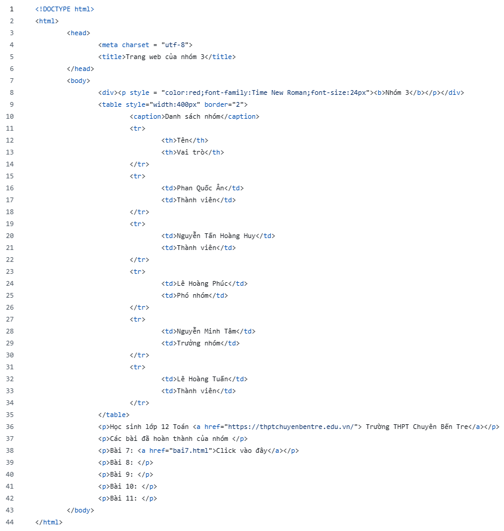

BÀI 7: HTML VÀ CẤU TRÚC TRANG WEB
1. Trang web và HTML
a) Thẻ đánh dấu HTML
_ Trang web được thiết lập theo một ngôn ngữ có cấu trúc đặc biệt gọi là ngôn ngữ đánh dấu siêu văn bản HTML.
_ Các thẻ được viết trong cặp dấu “<”, “>”. Thông thường mỗi thẻ bao gồm thẻ bắt đầu và thẻ kết thúc, chỉ ra phạm vi tác dụng của thẻ.
b) Phần tử HTML
_ Các tệp HTML là tệp văn bản được cấu tạo từ các phần tử HTML. Mỗi phần tử HTML gồm nội dung được đánh dấu bởi các thẻ (HTML tag) có tính năng điều khiển hoặc định dạng nội dung. Trình duyệt có chức năng hiển thị nội dung trang web theo đúng định dạng được thiết lập.
2. Cấu trúc cơ bản của một tệp HTML
<!DOCTYPE html> : Dòng này thông báo cho trình duyệt biết đây là tệp văn bản HTML.
<html> : Phần tử gốc chứa toàn bộ nội dung HTML của trang web, bao gồm <head> và <body>
<head> : Chứa các thông tin chung cho trang web như <title>, <meta>, <style>, <script>.
<body> : Chứa nội dung hiển thị của trang web.
<meta> : Dùng để mô tả các thông tin bổ sung như mã hoá, từ khoá, tác giả. Nằm trong <head>.
<title> : Đặt tên cho trang web, xuất hiện trong kết quả tìm kiếm.
3. Phần mềm soạn thảo HTML
a) Phần mềm Notepad:
_ Là phần mềm soạn thảo văn bản đơn giản
b) Phần mềm soạn thảo HTML chuyên nghiệp nguồn mở
_ Phần mềm Notepad++
_ Phần mềm Sublime Text
c) Sử dụng trang web hỗ trợ soạn thảo HTML trực tuyến
_ Yêu cầu máy tính có kết nối Internet và cài đặt trình duyệt chuẩn, có thể quan sát ngay kết quả hiển thị trang web trên trình duyệt.
4. Luyện tập
a) Phần từ HTML không thể lồng:
_ Các thẻ tiêu đề như <h1>, <h2>, <h3>,... không thể lồng với nhau.
b) Đoạn văn bản đơn giản:
Đoạn văn bản in ra
Đoạn mã HTML

Cây thông tin
5. Vận dụng
a) Một số trang web hỗ trợ soạn thảo HTML trực tuyến:
https://www.w3schools.com/html/
b) Tạo trang web